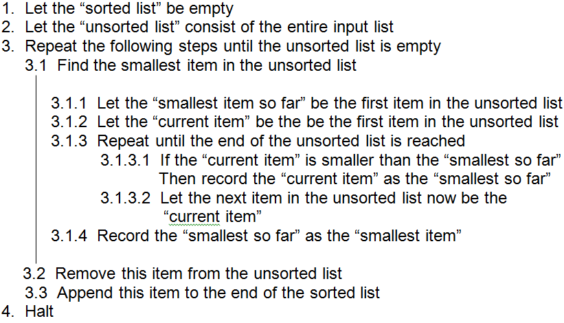
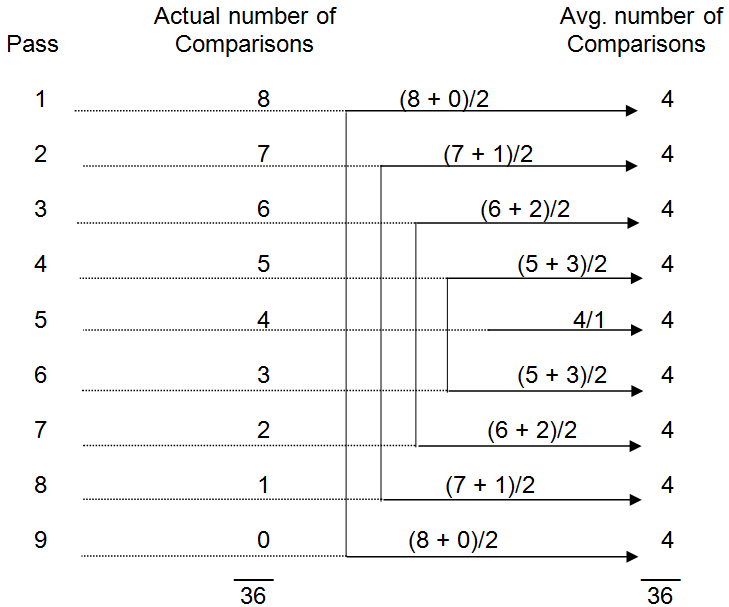

5.4.1 Selection sort
One of the most straightforward ways of approaching the sorting problem is to use the selection sort method. The operation of the selection sort algorithm can be visualized by imagining a list of input objects and a second, originally empty, list which will eventually hold all of the input items in sorted order. Ascending order selection sort will scan through the input list to determine the smallest item in that list. It will then remove that smallest item from the input list and append it to the end of the sorted list. This process of finding the smallest input item, removing it from the input list and appending it to the end of the sorted list is repeated over and over until the input list is empty. At that point, all of the input items will be arranged in ascending order in the sorted list.
The selection algorithm is presented formally in Figure 5.10. Since the process of “finding the smallest item” involves a number of steps, the algorithm includes a detailed description of that process in step 3.1.
A descending order selection sort could also be defined. In this case the only change to the algorithm would be that instead of selecting the smallest object from the input list in step 3.1, the largest item would be selected. The final result would be a list sorted in descending order, from largest to smallest.
Figure 5.10 Selection sort

Figure 5.11: An example of selection sort
Figure 5.11 illustrates the behavior of the selection sort algorithm on a list of eight items. The “passes” shown in the figure correspond to repetitions of step 3.1, which scans the unsorted list for the smallest item. The rows of the figure represent executions of step 3.1.3.1, which compares the “current item” to “smallest item so far”. In each row, the “smallest item so far” is printed in boldface and the “current item” is underlined.
A careful examination of this figure reveals that 36 comparisons are required to completely sort the eight items. If you think about it, you will see that regardless of the actual items to be sorted, or the original order of those items, 36 comparisons will always be required to sort eight items using the selection sort method. Surprisingly, this is true even if the original “unsorted” list were already sorted to begin with. The algorithm will blindly scan the “unsorted” list during each pass to find the smallest item, not realizing that in this case the smallest item always appears first.
Let’s now turn our attention to the problem of developing a general formula to compute the number of comparisons needed to sort any arbitrary list of N items. One approach to developing such a formula is to start with an example that has already been worked out, such as the example of Figure 5.11, and look for patterns in the way the data is processed.
For an eight item list, the selection sort algorithm must find eight smallest items. In this case, the statements that comprise step 3 of the algorithm of Figure 5.10 will be executed a total of eight times. On each pass through step 3, the smallest item in the unsorted list is found (step 3.1), that item is removed from the unsorted list (step 3.2), and then appended to the sorted list (step 3.3). Hence, during the next pass through step 3 the unsorted list is one item shorter, so there will be one less item to compare.
For an N item list, N smallest items must be found. The first time the unsorted list is searched, all N items must be examined. During the second pass, N-1 comparisons will be performed. During the Nth pass only one item must be examined. Finally, after the Nth pass is completed the list will be sorted. For the sake of our analysis, the point in time when the list becomes fully sorted will be thought of as an N+1th “pass”. This final pass requires zero comparisons, since the list is now sorted.
The number of comparisons needed to sort a list is equal to the number of passes that must be made through the list times the average number of comparisons per pass, or:
Comparisons = Number_of_passes × Avg_number_of_comparisons_per_pass
Figure 5.12 illustrates an analysis of the comparisons required by the eight item selection sort. The eight item sort can be thought of as requiring nine passes (8+1) with an average of four (8/2) comparisons per pass, for a total of 36 comparisons. The reason four comparisons are required, on average, per pass is that the number of items to be scanned decreases by one during each pass – so the initial passes over many items are balanced out by the final passes over few items. In general, the average number of comparisons per pass in selection sort will always be one half of the number of items to be sorted.
Figure 5.12: An analysis of the comparisons required by an eight item selection sort
The number of comparisons required by a selection sort of N items can be computed by the formula:
Number of selection sort comparisons = (N+1) × (1/2N)
Or, equivalently
Number of selection sort comparisons = 1/2(N2+N)
For eight items, we have 1/2(82 + 8) = 1/2(64 + 8) = 1/2(72) = 36 comparisons. You should convince yourself that the formula is indeed correct by performing a variety of similar analyses on different sized lists.
Using this general formula, it is possible to determine in advance the exact number of comparisons selection sort will require to sort any list. For example, given a 10,000 item list we can compute that 50,005,000 comparisons will be needed to perform the sort.
- # of comparisons for selection sort of 10,000 items = 1/2(10,0002 + 10,000)
- = 1/2(100,000,000 + 10,000)
- = 1/2(100,010,000)
- = 50,005,000 comparisons
If we know how quickly some particular computer can perform a comparison operation, we can get a rough idea of how long the selection sort will take to sort a list on that machine. This is because the total time taken by a sort can be estimated as:
Estimated sorting time = Number of comparisons × Time per comparison operation
Assuming we have access to a machine that can perform one million comparisons a second[5], a selection sort of 10,000 items should take approximately 50 seconds (50,005,000 × 1/1,000,000 = 50.005).
It is important to realize that this formula gives only a rough estimate of the time required by a sort. This is because it takes into account only the amount of time involved in comparing items. Clearly, the selection sort algorithm does more than just compare items. For example, it also removes items from the sorted list and appends them to the sorted list. Nevertheless, the runtime of selection sort is highly dependent on the number of comparisons required by the algorithm.
Exercises for Section 5.4.1
-
Illustrate the behavior of selection sort in a manner similar to Figure 5.11 on the following input list:
150 -50 75 -76 12
- How many comparisons were required to sort the list shown in problem 1?
- Given an input list 100 items long, how many comparisons would be required to sort this list?
- Assuming you had an antique computer that could perform one comparison every 1/1,000 of a second, how many seconds would be required to sort a 100 item list using the selection sort algorithm?
- Given the same computer as in problem 4, how many seconds would be required to sort a 200 item list using the selection sort algorithm?
- Given a relatively modern computer capable of one million high-level operations per second, how long will selection sort take to process a list of 1,000 items? A list of 2,000 items? 3,000 items?
[5] As mentioned earlier, this value was chosen for illustrative purposes only.